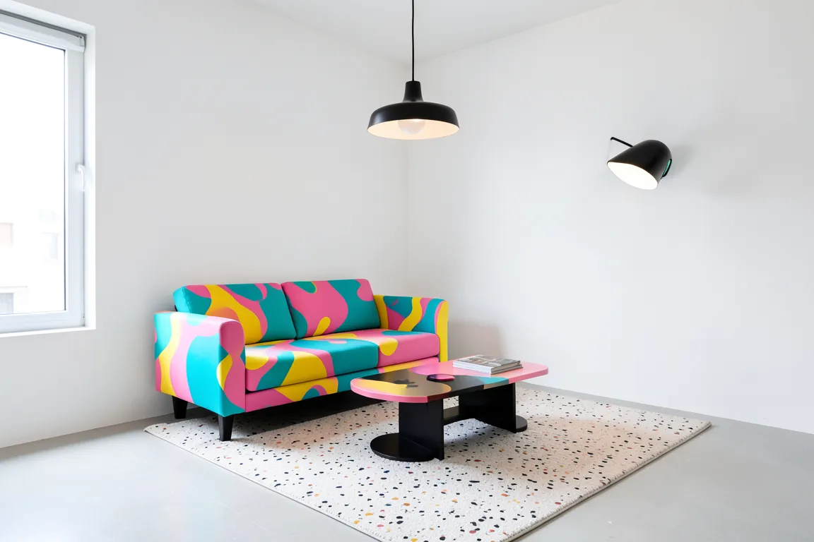

The rooms of the Milan design group around Ettore Sottsass. Furniture is a stack of primary solids in plastic laminate, printed with squiggles and terrazzo chips in clashing colours; each piece stands alone like a sculpture, and no axis or rule of good taste orders the room.

Core thesis
Function is not the only meaning of an object; colour, pattern and irony are functions too.
Design principles
Build each piece from primary solids, such as a cylinder, a cone, a cube and a sphere, at clashing scales of 1:3 or more.
Cover 30–50% of the furniture surface with printed plastic laminate in squiggle, terrazzo or grid patterns at a 10–20 cm repeat.
Use 4–6 saturated hues and set complementary hues side by side with no neutral border.
Rotate pieces 15–45 degrees to the wall lines, and keep 60 cm or more of free floor around each piece.
Make one totem, such as a room divider or a bookcase 180 cm or taller, the focal point; keep the rest below 100 cm.
Treat each lamp as a sculpture with a visible bulb, neon tube or coloured glass.
Show no wood grain: lacquer, laminate and terrazzo cover every surface.
Anti-patterns
A mirrored layout about a centre line
Natural wood grain and oiled finishes
Matching sets of furniture in one colour
Beige, grey or tonal palettes with no saturated hue